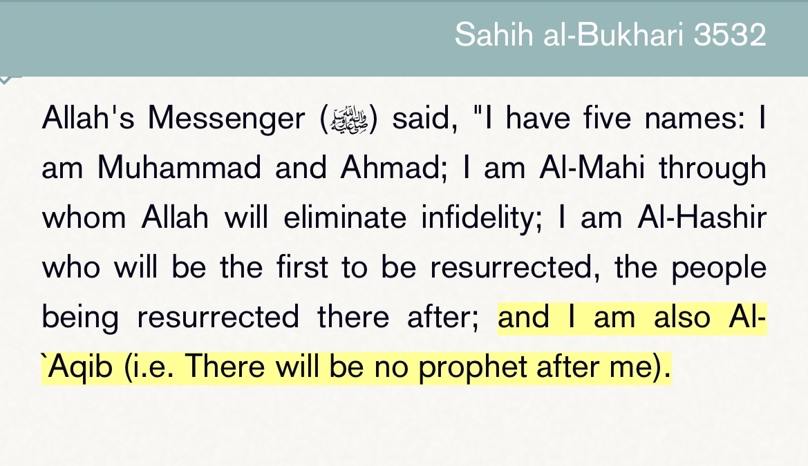
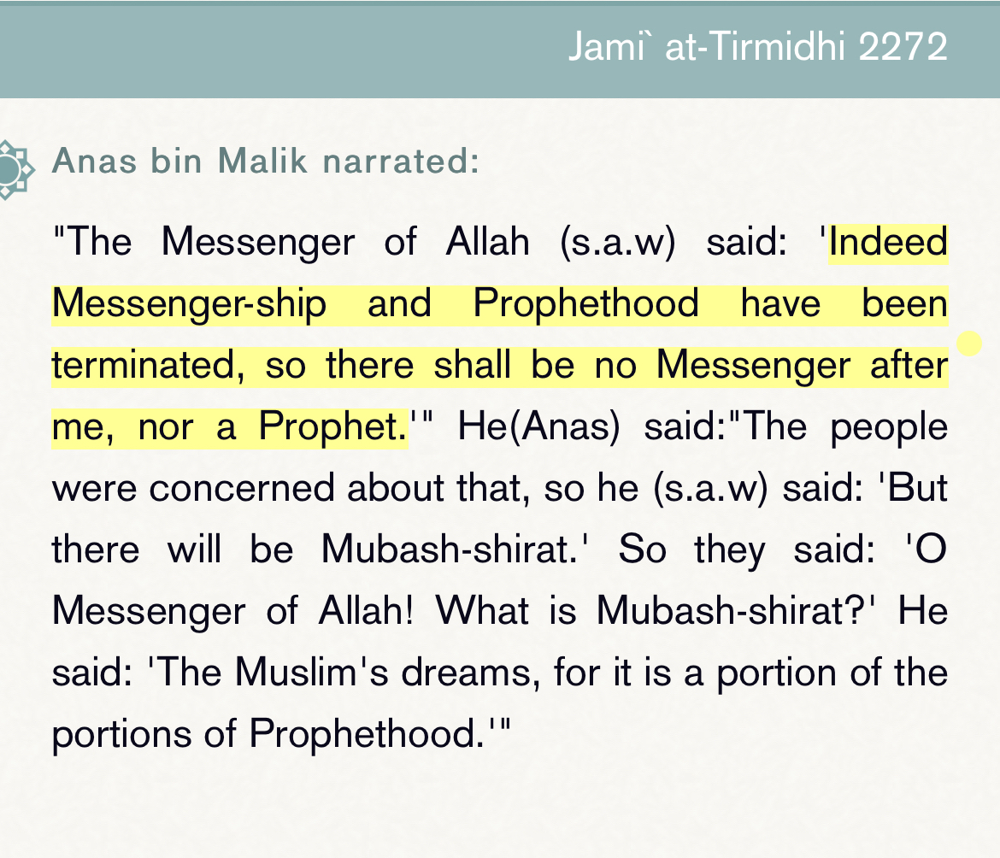
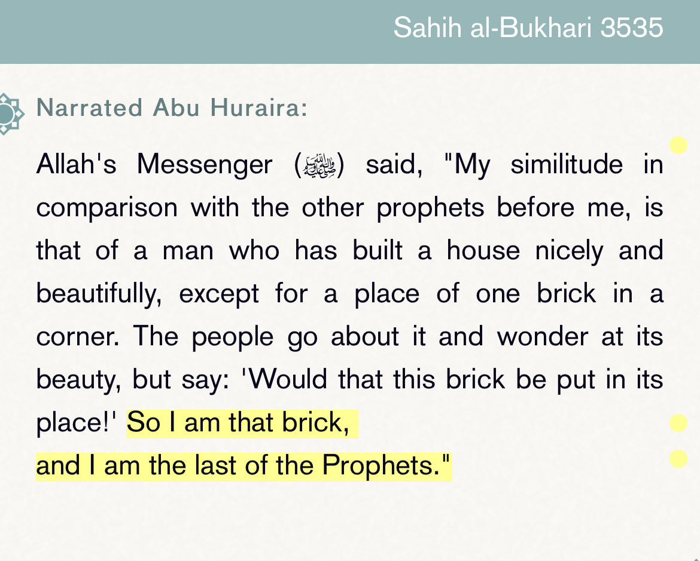
⬆️ Some clear Hadiths that show the prophethood ended with the prophet (SAW), thus the claims of mirza (LA) would be false since he’s going against the prophet (SAW)
Jami` at-Tirmidhi 2219
Thawban narrated that the Messenger of Allah(s.a.w) said:
"The Hour shall not be established until tribes of my Ummah unite with the idolaters, and until they worship idols. And indeed there shall be thirty imposters in my Ummah,each of them claiming that he is a Prophet. And I am the last of the Prophets, there is no Prophet after me."
حَدَّثَنَا قُتَيْبَةُ، حَدَّثَنَا حَمَّادُ بْنُ زَيْدٍ، عَنْ أَيُّوبَ، عَنْ أَبِي قِلاَبَةَ، عَنْ أَبِي أَسْمَاءَ الرَّحَبِيِّ، عَنْ ثَوْبَانَ، قَالَ قَالَ رَسُولُ اللَّهِ صلى الله عليه وسلم " لاَ تَقُومُ السَّاعَةُ حَتَّى تَلْحَقَ قَبَائِلُ مِنْ أُمَّتِي بِالْمُشْرِكِينَ وَحَتَّى يَعْبُدُوا الأَوْثَانَ وَإِنَّهُ سَيَكُونُ فِي أُمَّتِي ثَلاَثُونَ كَذَّابُونَ كُلُّهُمْ يَزْعُمُ أَنَّهُ نَبي وأنا خاتم النبيين لا نبي بعدي " . قال أبو عيسى هذا حديث حسن صحيح .
Grade: sahih
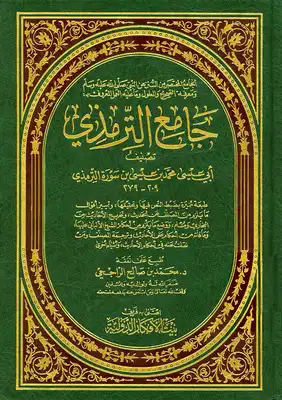
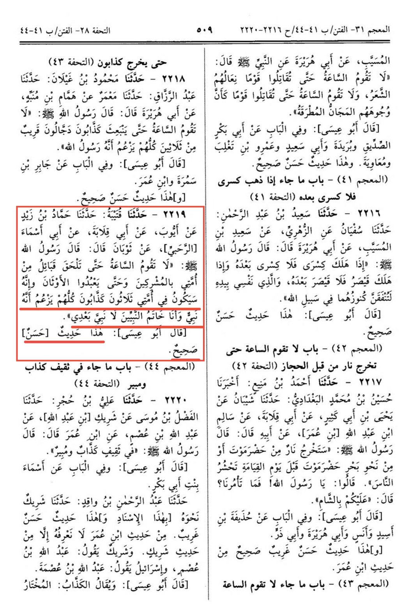
Sahih al-Bukhari 3455
Narrated Abu Huraira: The Prophet (ﷺ) said:
"The Israelis used to be ruled and guided by prophets: Whenever a prophet died, another would take over his place. “There will be no prophet after me, but there will be Caliphs who will increase in number.” The people asked, "O Allah's Messenger (ﷺ)! What do you order us (to do)?" He said, "Obey the one who will be given the pledge of allegiance first. Fulfil their (i.e. the Caliphs) rights, for Allah will ask them about (any shortcoming) in ruling those Allah has put under their guardianship."
حَدَّثَنِي مُحَمَّدُ بْنُ بَشَّارٍ، حَدَّثَنَا مُحَمَّدُ بْنُ جَعْفَرٍ، حَدَّثَنَا شُعْبَةُ، عَنْ فُرَاتٍ الْقَزَّازِ، قَالَ سَمِعْتُ أَبَا حَازِمٍ، قَالَ قَاعَدْتُ أَبَا هُرَيْرَةَ خَمْسَ سِنِينَ، فَسَمِعْتُهُ يُحَدِّثُ، عَنِ النَّبِيِّ صلى الله عليه وسلم قَالَ " كَانَتْ بَنُو إِسْرَائِيلَ تَسُوسُهُمُ الأَنْبِيَاءُ، كُلَّمَا هَلَكَ نَبِيٌّ خَلَفَهُ نَبِيٌّ، وَإِنَّهُ لاَ نَبِيّ بعدي، وسيكون خلفاء فيكثرون. قالوا فما تأمرنا قال فوا ببيعة الأول فالأول، أعطوهم حقهم، فإن الله سائلهم عما استرعاهم
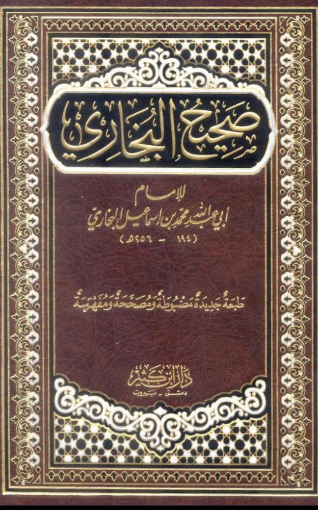
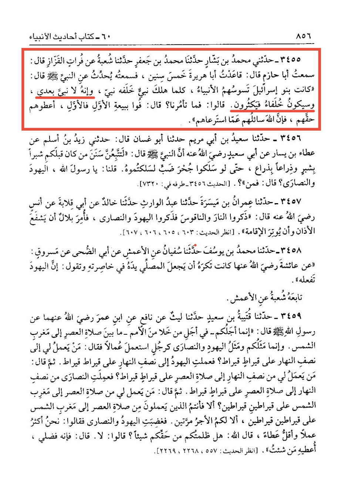
Ahzab: 40
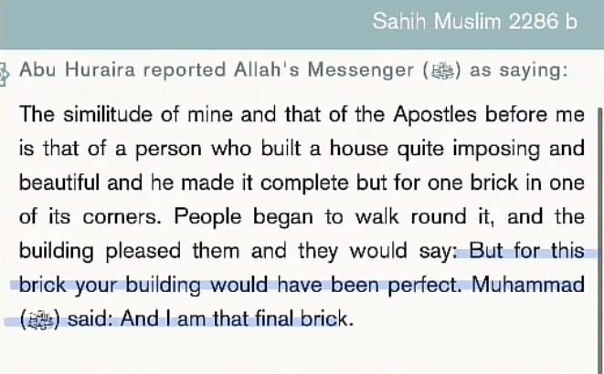
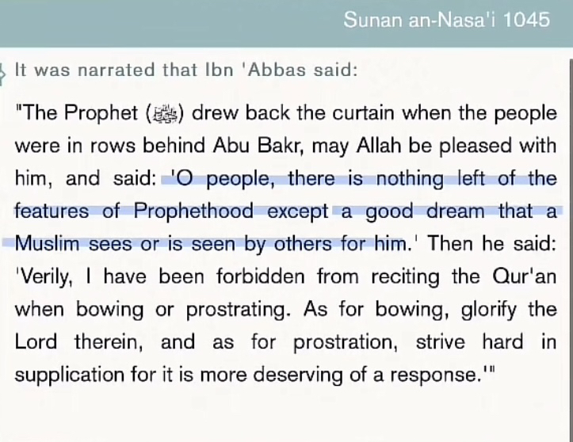
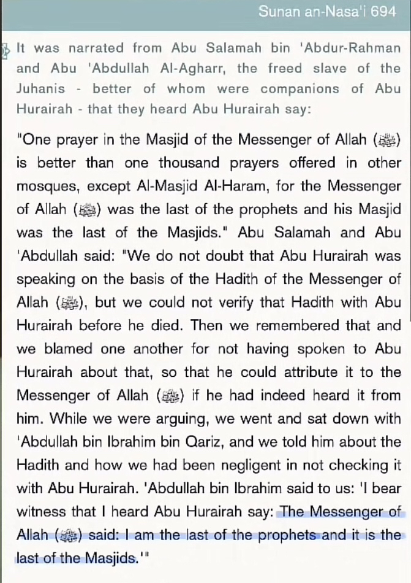
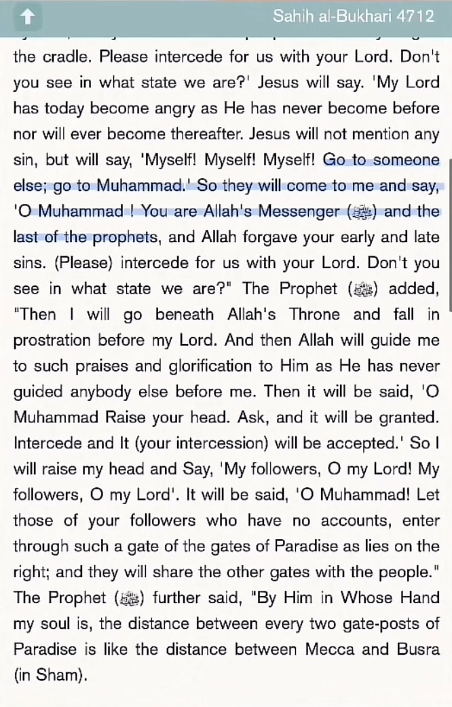
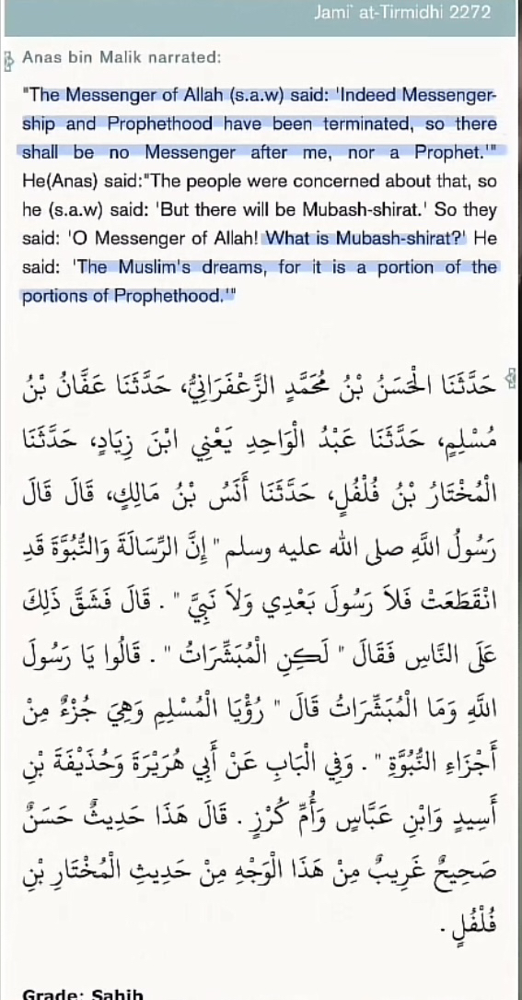
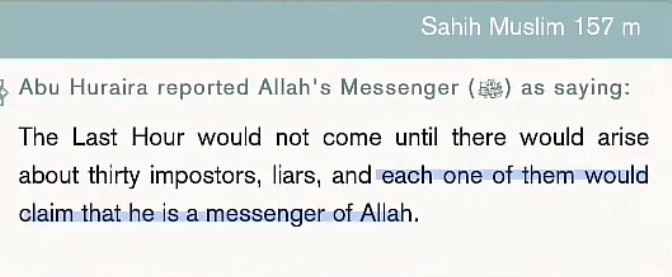
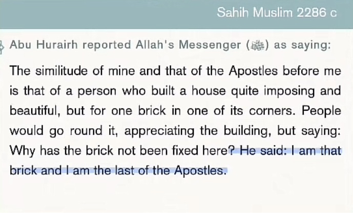
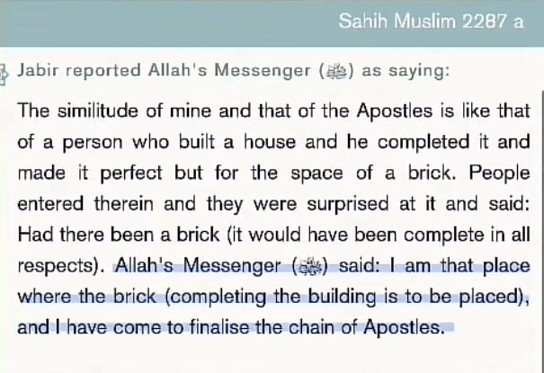
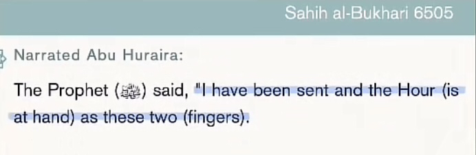
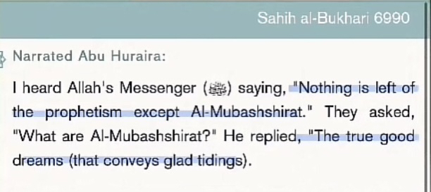
Refuting the Argument of
“If Muhammad peace be upon him is the final prophet, then how can Jesus peace be upon him come back at the end of times then?
Jesus peace be upon him will not return to Earth as a prophet. When he returns he won't be performing the functions that a prophet performs nor the functions he performed during his first send off to Earth.
Imam Al Nawawi in his commentary under Saheeh Muslim, Book 031, Number 5914 states:
“The scholars said: In this hadith there is proof that when Jesus son of Mary (peace be upon him) descends down to earth during the end times he will be coming down as a ruler and judge from amongst the rulers and judges of this Ummah and rule and judge by the Shariah of our Prophet Muhammad (peace be upon him). He won't be coming as a Prophet.”
Source: Imam Al Nawawi, Sharh Saheeh Muslim, Kitab: Fadaa'il Al Sahaabah, Bab: Min Fadaa'il 'Ali bin Abi Taalib Radiya Allaahu 'Anhu, Commentary on Hadith no. 4418
——
Jesus peace be upon him ruling by the Shariah of Muhammad peace be upon him and coming down as a judge is attested by several authentic Hadith:
👇
“It is narrated on the authority of Abu Huraira that the Messenger or Allah (may peace be upon him) observed: I swear by Allah that the son of Mary will certainly descend as a just judge and he would definitely break the cross, and kill swine and abolish Jizya and would leave the young she-camel and no one would endeavour to (collect Zakat on it). Spite, mutual hatred and jealousy against one another will certainly disappear and when he summons people to accept wealth, not even one would do so.”
Source: Sahih Muslim Book 001, Number 0289
“It is narrated on the authority of Abu Huraira that the Messenger of Allah (may peace be upon him) observed: What would you do when the son of Mary would descend amongst you and would lead you as one amongst you? Ibn Abi Dhi'b on the authority of Abu Huraira narrated: Your leader amongst you. Ibn Abi Dhi'b said: Do you know what the words:" He would lead as one amongst you" mean? I said: Explain these to me. He said: He would lead you according to the Book of your: Lord (hallowed be He and most exalted) and the Sunnah of your Apostle (may peace be upon him).”
Source: Sahih Muslim Book 001, Number 0292
——
So as we could see, Jesus peace be upon him will be coming:
- As a judge and ruler, no where is it stated that he would be coming as a Prophet
- To rule by the revelation sent to Muhammad (peace be upon him) and not by new revelations
In conclusion, there is no contradiction between Jesus' peace be upon him second return and Muhammad peace be upon him being the final prophet
What does the word “khatam” mean
Ahmadis claim that "khātim an-nabīyīn" doesn't mean last of all prophets; they believe that there was another Prophet after Muhammad (ﷺ) here we will see the definition of the scholars.
Abu Nasr al-Jawhari (940- 1002):"..Khatam, Khatim, Khitam, the Plural Khawatim, the MEANING of all these are the SAME and the END of something is Khatim ash-shay. And MUHAMMAD (ﷺ) is the LAST of PROPHETS (peace and blessings upon him)."
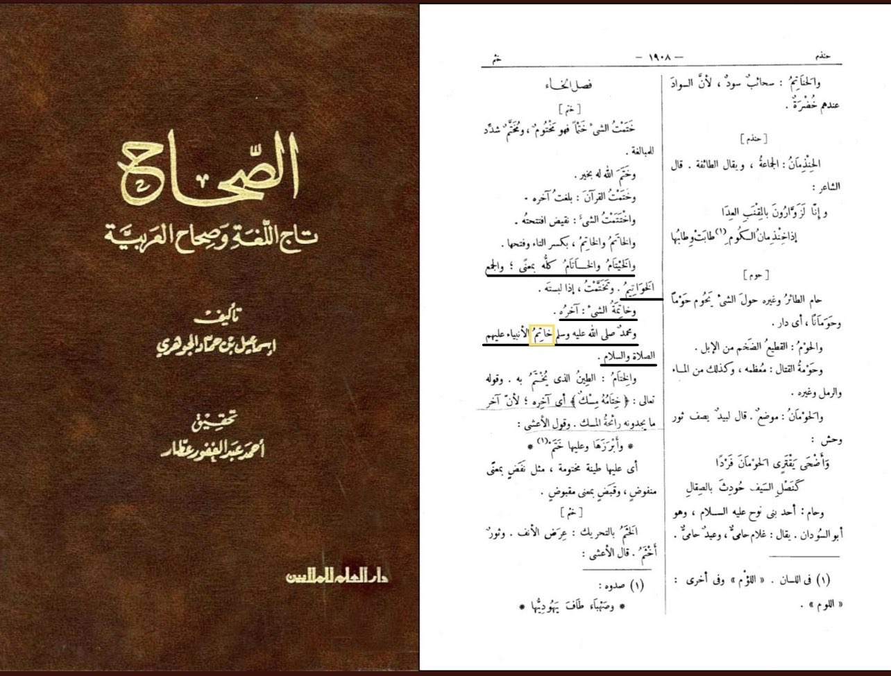
The definition from a Tabi’i:
It is narrated that Hasan [al-Basri] regarding, 'wa khātim an-nabīyīn' : “Allāh completed the series of the prophets through Muhammad ,ﷺ, and he is last [of them] in being raised.”
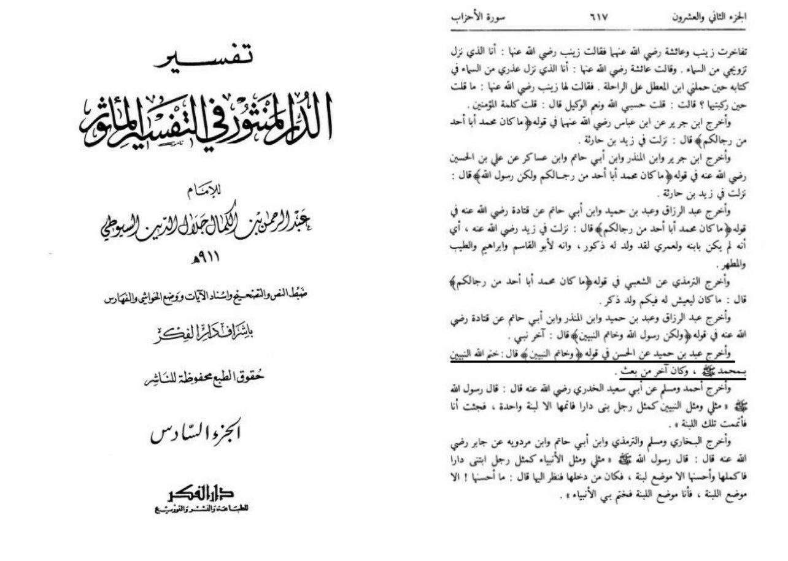
Here is another:
It was narrated from Qatada regarding, (He is the Messenger of Allāh and khātim an-nabīyīn): He said:"He is the 'LAST NABI.'”
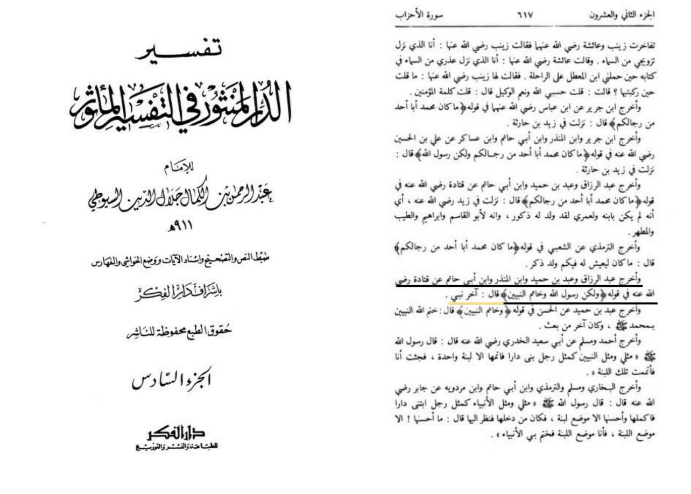
Al-Qurtubī mentions in surah al-ahzab that Ibn-Attia (mufassir) said: "The scholars of the Ummah, of [both] al-Salaf wa 'l-Khalaf, these words are to be taken in absolute [general] terms whereby the text necessitates the meaning that there is NO prophet after him (ﷺ).”
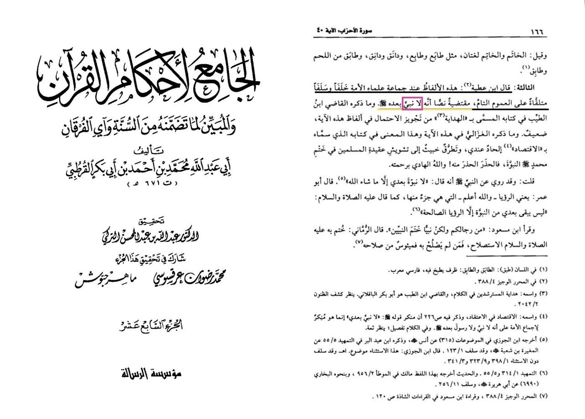
Ibn Kathīr said: "This verse affirms that there will be no prophet after him. If there will be no prophet after him, then there will certainly be no messenger after him either, because the status of a messenger is higher than that of a prophet, for every messenger is a prophet, but the reverse is not the case.”
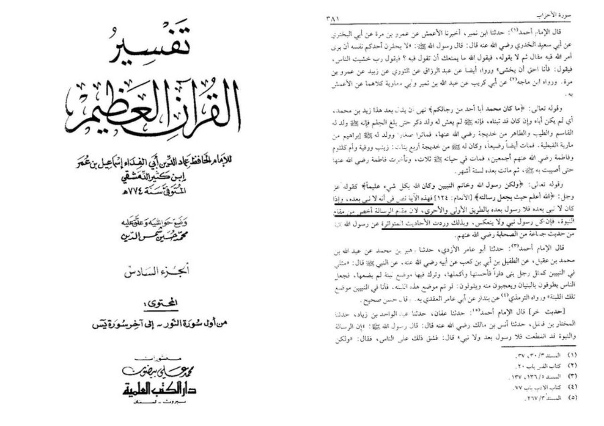
al-Shawkānī said:"The majority of the scholars have read the word as 'khātim' and ‘Asim as khātam.' According to the first, it would mean: “The Holy Prophet closed the lines of the prophets (i.e. he came at the end of them).” And according to the second, “He was like a seal for them, with which their line was sealed, and with whose inclusion their group was embellished."
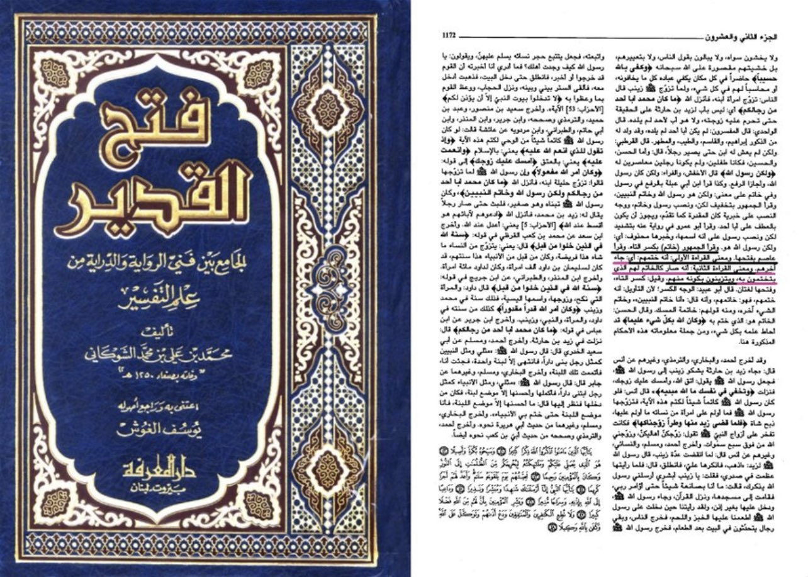
Imam Ibn Qudama said in كتاب المغني :
"ومن ادعى النبوة، أو صدق من ادعاه، فقد ارتد؛ لأن مسيلمة لما ادعى النبوة، فصدقه قومه، صاروا بذلك مرتدين"
Whosoever claims Prophethood or one who accepts his claim then (both) become APOSTATES because when Musaylma claimed to be a prophet and his people testified to it then all of them became apostates along with him."
As one can see the scholars of the past regarded "khātim an-nabīyīn" to mean the last of all Prophets/the seal of the Prophets and Imam Ibn Qudama al Maqdisi says that whoever claims prophethood is a apostate.